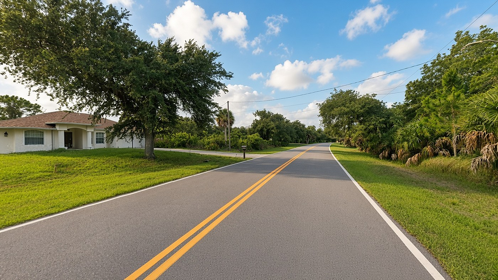

Draft preview for review. Not published. New Page for /explore/north-port/warm-mineral-springs/. Goes live 2026-12-05. Images shown from local copies. Rollout batch
Warm Mineral Springs, North Port: Living Near Florida's Only Natural Warm Spring

Explore · North Port · Warm Mineral Springs
Warm Mineral Springs is both a famous North Port park, Florida's only natural warm spring, and the neighborhood of homes and lots around it.
Most people searching the name want the park. If you are thinking about living nearby, this page covers both: the spring, the fees, and what the county record shows about Warm Mineral Springs homes for sale. For the rest of the city, see Explore North Port.
The short version
The spring. Florida's only natural warm spring, about 85 degrees year-round, per the City of North Port.
The neighborhood. About 2,162 parcels in ZIP 34287; about 1,130 are vacant land.
Homes. Built 1955 to today; median detached home built about 1987.
Price. Median qualified detached sale about $290,000 in 2025 and 2026.
85°F
average spring temperature
150,000+
park visitors a year
1,130
vacant parcels in the subdivision
$290,000
median qualified detached sale, 2025 and 2026
Source: City of North Port, Warm Mineral Springs Park; Sarasota County Property Appraiser, parcel data download (Nov 20, 2026).
The park
Warm Mineral Springs Park
Open daily, 9 a.m. to 5 p.m.
The City of North Port runs Warm Mineral Springs Park at 12200 San Servando Avenue. The spring averages 85 degrees year-round, is listed on the National Register of Historic Places, and draws more than 150,000 visitors a year. The historic building complex has been closed since Hurricanes Elsa and Ian; a temporary admissions building and restroom trailer are on site.
| Visitor | Price |
|---|---|
| North Port resident | $15 |
| Sarasota County resident | $18 |
| Non-resident | $20 |
| Child 5 and under | Free |
A master plan for the park was adopted in April 2019. Small coolers are allowed; glass, alcohol, and pets other than service animals are not.
Source: City of North Port, Warm Mineral Springs Park; National Park Service, National Register record.

De Leon Drive in the Warm Mineral Springs neighborhood.
Homes
Warm Mineral Springs homes for sale
Older homes, new builds, and lots.
The Sarasota County roll shows about 2,162 parcels in the Warm Mineral Springs subdivision, about 948 with buildings. That includes about 758 detached homes and 141 duplexes. Detached homes range from 1955 to brand new; 38 percent were built in 2000 or later. The median has about 1,690 square feet, and about 14 percent have a pool.
| Measure | Value |
|---|---|
| Total parcels | 2,162 |
| Vacant parcels | 1,130 |
| Detached single-family homes | 758 |
| Duplexes | 141 |
| Detached homes built 2020 or later | 12% |
| Median county just value, detached | $221,000 |
| Median qualified detached sale, 2025 and 2026 | $290,000 (37 sales) |
Figures are from the Sarasota County Property Appraiser's public data file, downloaded November 2026. Just value is the appraiser's estimate for tax purposes, not a market price. Qualified sales are those the appraiser marks as arm's-length.
Thinking about building on one of the vacant lots? Our 8 steps from lot to build covers surveys, utilities, permits, and builder contracts.
Source: Sarasota County Property Appraiser, parcel data download (Nov 20, 2026).
Before you buy
Four checks near Warm Mineral Springs
Especially on older homes and lots.
Before buying near Warm Mineral Springs, check the age of the roof and systems on older homes, confirm water and sewer or well and septic, pull the flood zone and insurance quotes, and expect park traffic on the streets nearest the entrance.
Older homes
Roof, air conditioning, plumbing, and electrical on pre-2000 homes.
Utilities
City water and sewer or well and septic. It changes the cost.
Flood and insurance
Pull the FEMA zone and get quotes during inspection.
Park traffic
Visit on a busy weekend if the home is near the park.
Our insurance guide helps with the cost side. North Port schools are part of Sarasota County Schools; confirm zoning for the address.
Source: FEMA Flood Map Service Center; Sarasota County Schools.
Nearby, the North Port plat recorded as Port Charlotte Subdivision 41 (ZIP 34287) is mostly vacant lots on the county roll, with about 190 homes. The same checks apply there.
Source: Sarasota County Property Appraiser, parcel data download (Nov 20, 2026).
FAQs
Warm Mineral Springs: common questions
What is Warm Mineral Springs?
Warm Mineral Springs Park, run by the City of North Port, is the only natural warm spring in Florida, with an average temperature of 85 degrees year-round. The spring is listed on the National Register of Historic Places, and the city says it draws more than 150,000 visitors a year.
Is there a neighborhood called Warm Mineral Springs?
Yes. The Warm Mineral Springs subdivision surrounds the park in ZIP 34287, inside the City of North Port in Sarasota County. The county roll shows about 2,162 parcels there, about 1,130 of them vacant land.
How much is admission to Warm Mineral Springs Park?
For October 1, 2026, through September 30, 2027, adult daily admission is $15 for North Port residents, $18 for Sarasota County residents, and $20 for non-residents. Children 5 and under are free. Multi-visit and annual passes are available.
Is Warm Mineral Springs Park open?
Yes, from 9 a.m. to 5 p.m. daily except Thanksgiving and Christmas. The historic building complex has been closed since damage from Hurricanes Elsa and Ian; a temporary admissions building and restroom trailer serve visitors.
What do homes cost near Warm Mineral Springs?
The median Sarasota County just value of a detached home in the subdivision is about $221,000, and qualified 2025 and 2026 detached-home sales had a median of about $290,000 across 37 sales.
Can you build near Warm Mineral Springs?
Yes. About 1,130 of the parcels are vacant land on the county roll. Check utilities, flood zone, and any deed restrictions for the specific lot.
Thinking about living near Warm Mineral Springs?
We will pull recent sales and lot prices, check utilities and the flood zone, and show you homes near the park. Call or text The Helgemo Team at (941) 770-2275.
The office is at 320 Cross Street, Punta Gorda, Florida 33950. You can also meet Brian Helgemo or read more about the team.
Sources: City of North Port, Warm Mineral Springs Park; National Park Service, National Register record; Sarasota County Property Appraiser, parcel data download (Nov 20, 2026); FEMA Flood Map Service Center; Sarasota County Schools. Checked November 20, 2026.